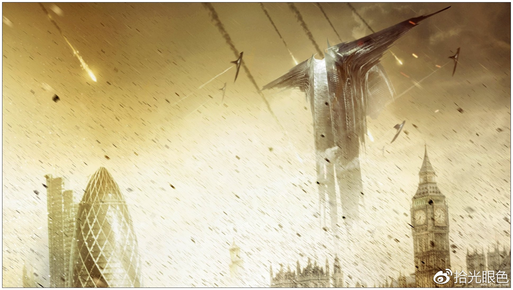

1.继承
2.条纹背景
3.蚂蚁行军
4.border-radius
5.clip-path

6.切角效果
7.梯形标签
8.用css实现饼图
20%
60%
9.折角效果
11.插入换行
- Name:
- Lea Verou
- Email:
- lea@verou.me
- leaverou@mit.edu
- Location:
- Earth
12.自定义下划线
On Sunday morning Donny went into the yard and played with a dog.On Sunday morning Donny went into the yard and played with a dog.
13.字体效果
css3d
cssfg
14.环形文字
15.点赞动画
16.光标
禁用光标
copy光标
放大镜光标
隐藏光标
17.scroll窗口提示
18.resize属性
19.自适应内部元素（width:min-content）
The great Sir Adam Catlace was named after Countess Ada Lovelace, the first programmer.